personal work
These illustrations were created to find a cohesive style. Each painting analyzes femininity, as well as serve as color studies in how neutral colors can work with brighter, more exciting colors.
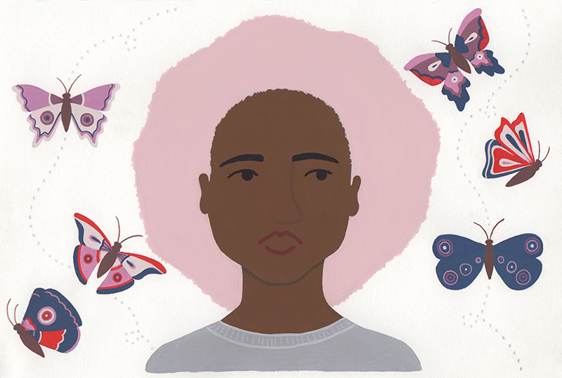
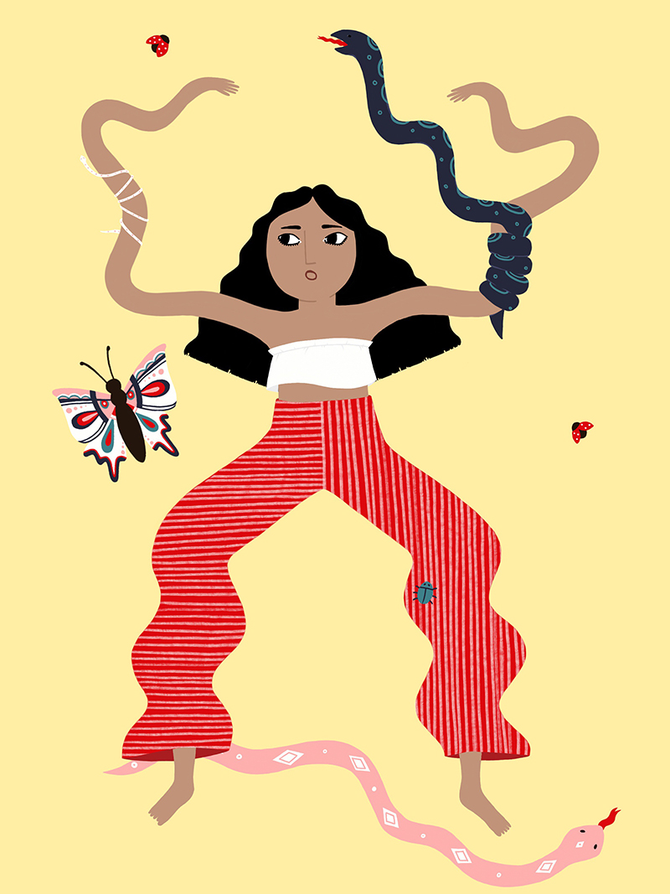
![[Glasses]](img/glasses.jpg) 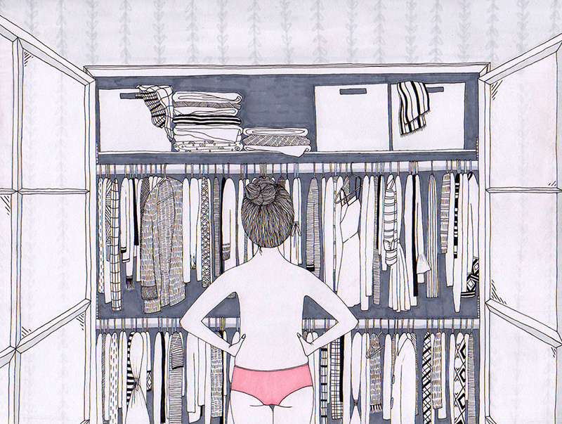
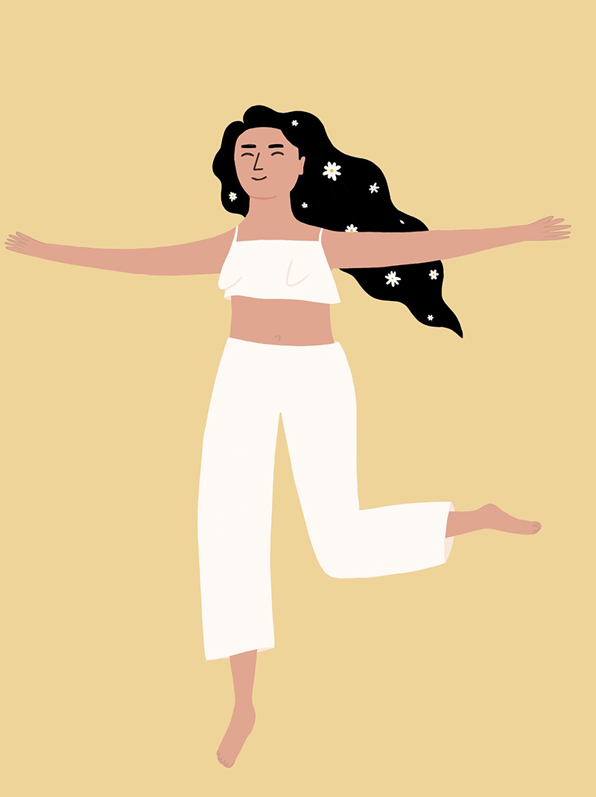
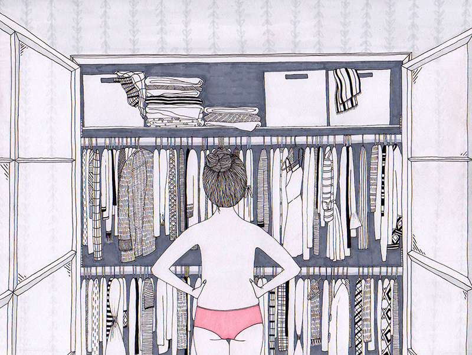
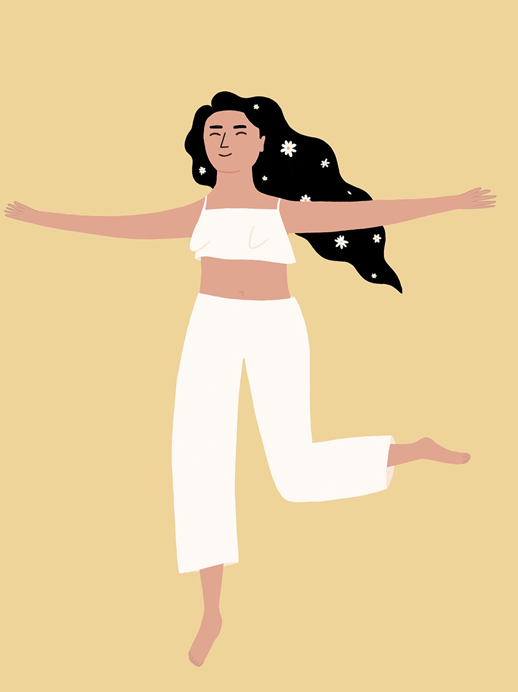
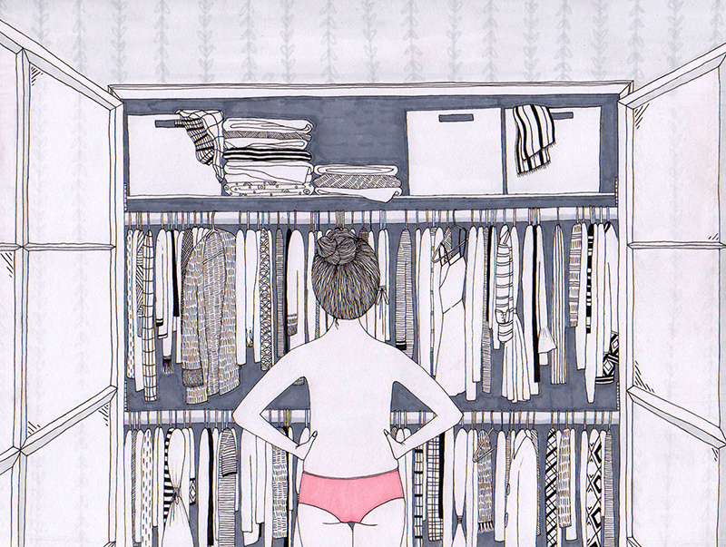
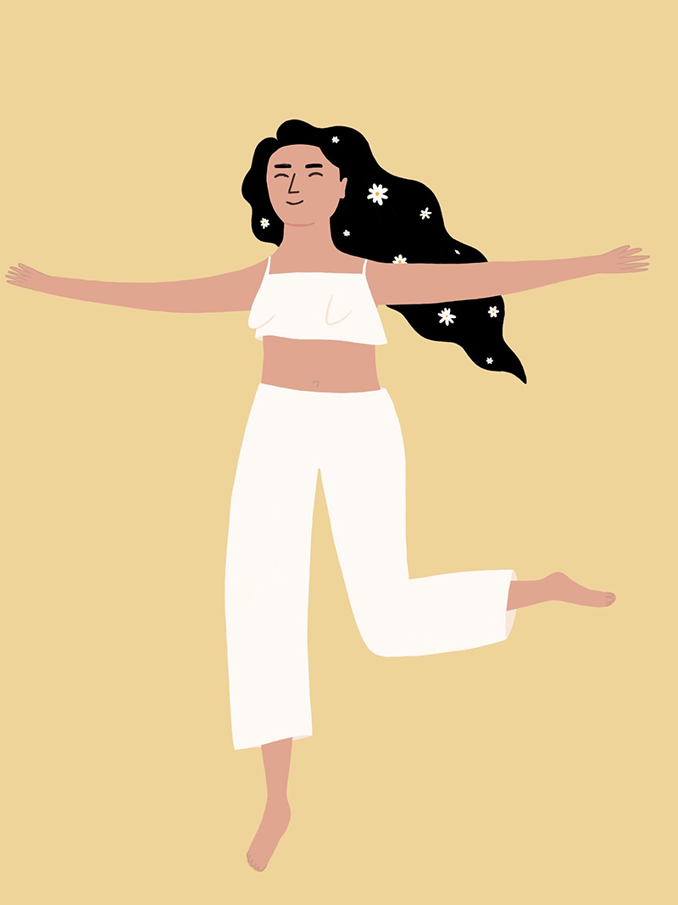
fem newsmagazine
FEM is a magazine affiliated with UCLA Student Media and discusses topics relating to gender, feminism, and culture. These illustrations were created digitally to accompany articles posted on the website, as well as in the quarterly print issue.
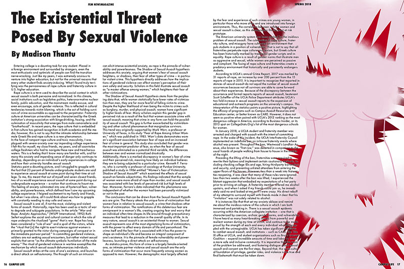
![[Orientalism]](img/Orientalism.jpg) 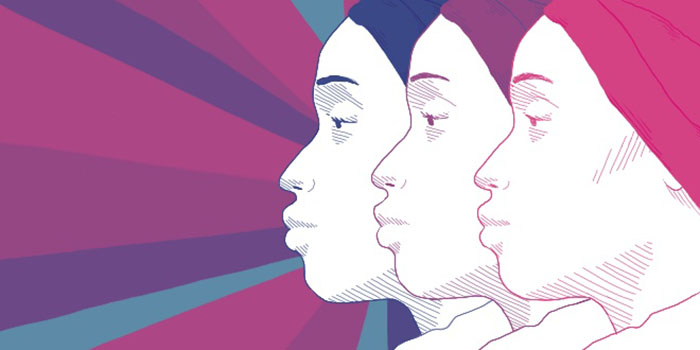
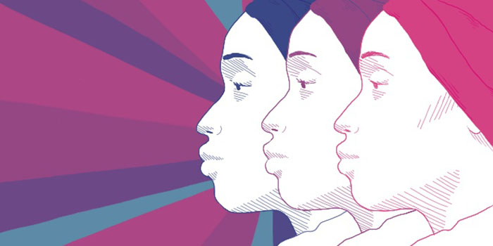
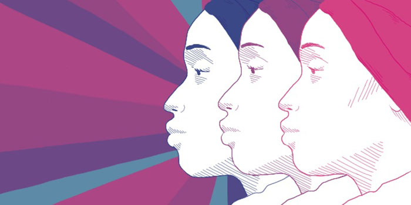